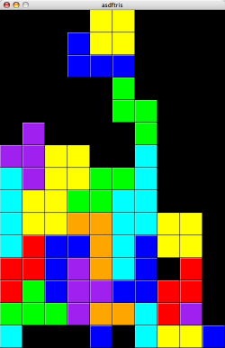
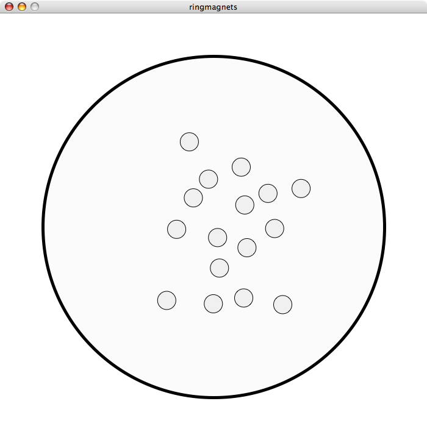
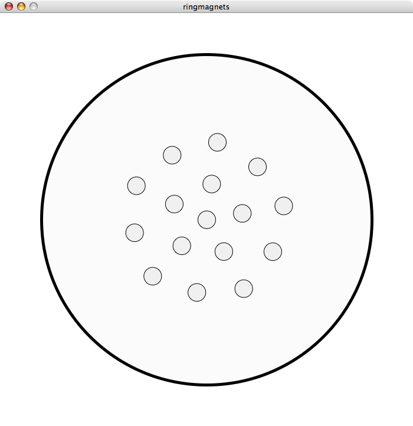
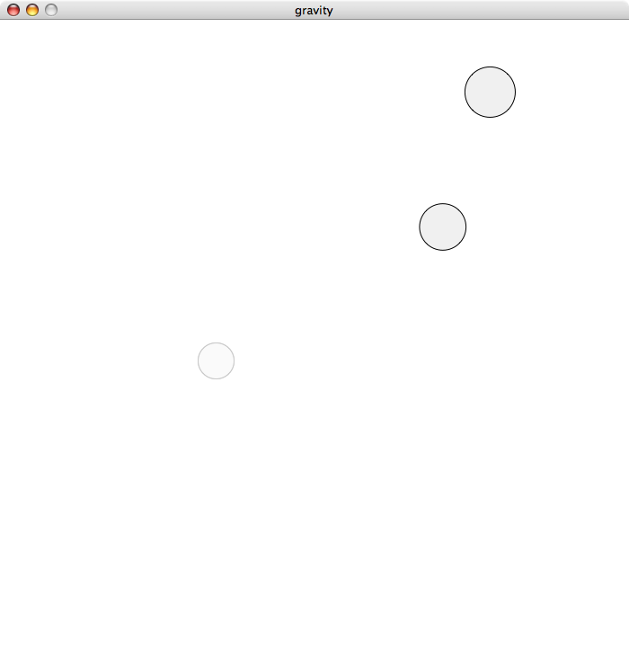

about me
My name is Jonathan Ho, and I'm a student of Troy High School in California. I've been tinkering with computer programming since early in elementary school, and over the years I've created countless small projects and toys.
I could have never learned programming had it not been for open-source software—I've learned countless coding techniques from reading source code, and I rely almost entirely on an open-source programming environment. So in the giving spirit of open source, I've decided to post some of my most interesting projects here. Everything's under the MIT/X11 license, so there's not much to worry about if you decide to use my horrible code for any reason.
Each section below describes one of my projects and contains a link to source code. To the right is a navigation bar that you can use to jump to individual sections.
h1n1
H1N1 is a small, bare-bones Scheme interpreter that I wrote to help me learn about interpreters and compilers. It's written in pure Java and relies on no external dependencies.
An example REPL session serves as a pretty good description:
> ; Let's define some functional programming idioms
> (define null? (lambda (x) (eqv? x '())))
> (define foldr (lambda (f x l) (if (null? l) x (f (car l) (foldr f x (cdr l))))))
> (define map (lambda (f l) (foldr (lambda (x y) (cons (f x) y)) '() l)))
>
> ; Now let's try them out
> (define incr (+ 1)) ; partial function application
> (map incr '(1 2 3 4 5))
(2.0 3.0 4.0 5.0 6.0)
> (define sum (lambda (l) (foldr (lambda (x y) (+ x y)) 0 l)))
> (sum '(1 2 3 4 5))
15.0
>
> ; Let's try playing with the Fibonacci sequence
> (define fib (lambda (x) (if (= x 0) 1 (if (= x 1) 1 (+ (fib (- x 1)) (fib (- x 2)))))))
> (map fib '(0 1 2 3 4 5 6 7 8 9 10))
(1.0 1.0 2.0 3.0 5.0 8.0 13.0 21.0 34.0 55.0 89.0)
>
I submitted H1N1 for a computer science class project, so I did write a formal description. Here it is:
description
H1N1 a small Scheme interpreter, intended for students or programmers. It should fully support anonymous functions, basic control structures, and simple I/O operations. There should also be a small standard library of math functions and utility features.
The interpreter should sacrifice speed and efficiency of execution for clarity and simplicity of implementation.
There are numerous Scheme interpreters currently available, such as PLT Scheme, GNU Guile, and Gambit. This project does not aim to compete with these existing interpreters; it does not even attempt to fully implement the R5RS or R6RS standard. Rather, it aims to serve as a simple, clear sample implementation suitable for pedagogical purposes. It should be easily extendable by any interested party.
detailed objectives
- Basic operations – should support all basic arithmetic operations (+ , -, *, /, %). Should restrict types to floating-point for simplicity. Should also support boolean logic (and, or, etc.) and basic string manipulation (concatenation).
- Anonymous functions – should support first-class anonymous functions with the lambda keyword.
- Partial function application – when functions are applied with insufficient arguments, they are automatically partially applied. A wrapper function is returned.
- Control structures – if, cond, let
- Basic I/O – basic I/O procedures (print, write) should be supported for easy user interaction
- Standard library – the standard library should support standard functional programming idioms (map, fold, filter, etc.), and should provide math procedures (sin, cos, tan, log, etc.).
limitations
- For simplicity, this interpreter will perform no pre-execution passes on the syntax tree. Therefore, no optimization can be done, and no error warnings can be raised until the tree is actually evaluated.
- Improper lists will not be implemented.
- There will be no support for macros.
design outline
- A tokenizer class is responsible for tokenizing an input string according to Scheme syntax rules.
- A parser class reads a stream of tokens and constructs a syntax tree. The syntax tree is a hierarchy of expression classes, which all derive from the abstract Expr class. All Expr classes come with toString() methods for easy printing, equals() methods, and may or may not provide hashCode() methods.
- A VM (virtual machine) class is responsible for evaluating an expression, and keeps track of local variables in a stack. Built-in functionality is separated into the static Builtin class, which operates on a given virtual machine (this is done to separate the functionality of built-in procedures from the logic of the virtual machine).
- A main class is responsible for reading input from the user, passing it from the tokenizer to the parser and to the virtual machine, and printing the value to output for the user to see.
current status
- The current H1N1 implements the if control structure, list manipulation methods, arithmetic and boolean operators, multiple levels of equality testing (reference-level and value-level), anonymous functions, partial function application, and syntactic sugar for list quoting.
- User interaction is performed through a read-eval-print loop (a REPL). The interpreter can also execute code from an input file.
- Many control structures are still lacking, and I/O operations and a standard library are yet to be implemented.
The source code is available here.
asdftris
All programmers need to write a Tetris clone as a rite of passage, and asdftris is mine. It's written in Python, and uses the excellent PyGame SDL bindings for graphics and input.
Here's a quick screenshot:

The source code is available here.
raytracer
When I discovered the POV-Ray raytracer a few years ago, I was absolutely amazed by the quality and flexibility that raytracing provides. So, I decided to write my own raytracer. It's aptly named raytracer, and it's written in C++. (It comes with a simple BMP file writer which may be of interest.)
Unfortunately, the raytracer in its current state can only render spheres, and scenes can't be read from a file and must be hard-coded in the main procedure.
In this video, I chained several hundred consecutive scenes rendered by the raytracer using ffmpeg:
The source code is available here.
physics simulations
One of my favorite classes in high school was my physics class. I was fascinated by several of my teacher's demonstrations, so I decided to write some simulations with Processing. Both simulations here use the Verlet integration method.
magnets in a current loop
In this simulation, a loop of wire is wound around a circular surface. Current is run through the wire, and magnets are placed inside the surface. Clicking the mouse inside the circle places a magnet at that position, and pressing the spacebar disturb the system by applying a random force on each magnet. It's pretty interesting to see the magnets fall into their minimal energy configuration over time.
For example, this system of 16 particles...
...stabilizes to this:
Here's a link to the OpenProcessing page, which displays a live applet version and the source code.
gravity
This one simulates a system of bodies affected by gravity (like a group of planets). A pre-defined number of bodies (two here) float around under the standard gravitational force law, and the user controls the placement of a third planet with the mouse. It's ridiculously hard to get a stable orbit.
Here's a link to the OpenProcessing page.
mandelbrot set renderer
I first discovered fractals ages ago in an old Visual Basic book. When I started learning Haskell, I decided to write a Mandelbrot set renderer. The calculation mechanism was written with some help on the Internet, and the image writer is a direct translation of my raytracer's BMP writer into Haskell using the Data.Binary package.
Here's the output:
The source code is available here.